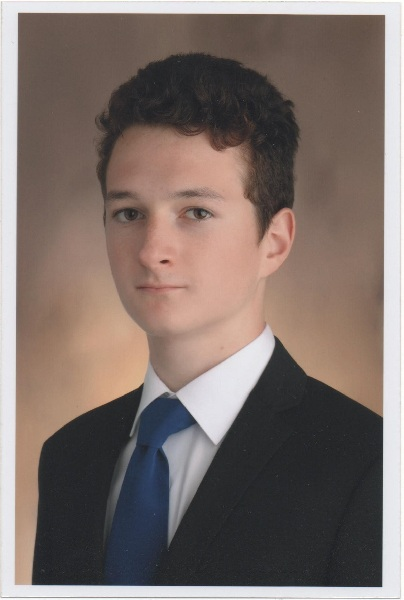

Főoldal |
Szabadidő |
Projektek |
Kapcsolat |
|  | Budai Benjámin vagyok, a Budapesti Műszaki- és Gazdaságtudományi Egyetem gépészmérnök alapszakos hallgatója. Felsőfokú tanulmányimat 2019 Szeptemberében kezdtem. Budapesten élek, így nem szorultam rá az egyetemi kollégumra. Középiskolai tanulmányaimat az Érdi Vörösmarty Mihály Gimnáziumban végeztem. |